품질경영산업기사 (2006-03-05 기출문제)
1과목: 실험계획법
1. 라틴방격법 실험에 대한 설명 중 가장 관계가 먼 내용은?
- 라틴방격법에서 3인자 실험을 하는 경우 각 인자의 수준수가 동일해야 한다.
- k×k 라틴방격법에서 총 자유도 vT=k3-1이다.
- 라틴방격법 실험에서는 교호작용효과를 검출할 수 없다.
- 라틴방격법의 실험방법은 일부실시법이다.
(정답률: 알수없음)

2. 다음 표는 인자A(2수준)와 인자 B(2수준)로써 조합 각각에 대하여 1회씩 실험을 한 결과를 나타내고 있다.
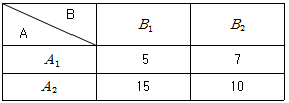
- 2.04
- 2.25
- 2.42
- 2.52
(정답률: 알수없음)
3. 반복이 같지 않는 일원 배치법에 대한 설명으로 가장 관계가 먼 내용은?
- 실험 중에 결측치가 발생할 때 사용한다.
- 기존장치와 새로운 장치 비교 시 대조가 되는 조건의 반복수를 증가시킬 때 사용한다.
- 결측치가 발생한 경우 결측치를 추정하여 사용한다.
- 실험 결과에 대한 측정에 실패한 경우에 사용한다.
(정답률: 알수없음)
4. 난괴법의 실험계획의 내용으로 가장 올바른 것은?
- 교호작용 효과를 구할 수 있다.
- 변량인자의 산포의 추정은 전혀 구할 필요가 없다.
- 변량인자의 모평균 추정은 전혀 의미가 없다.
- 일원배치법을 반복 실험하는 실험계획법이다.
(정답률: 알수없음)
5. 다음은 어떤 제품의 수율에 관한 데이터이다. A2B1수준 조합에서 모평균의 구간 추정값을 신뢰도 95%로 구하면? (단, VE=5.11, t0.975(5)=2.571, t0.975(4)=2.776)
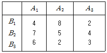
- 1.22±5.77
- 2.89±5.35
- 4.44±2,89
- 5.11±4.68
(정답률: 알수없음)
6. 반복이 동일한 1원 배치의 분산 분석표에서 각 수준의 모평균을 추정을 하고 싶다. 확률 95%의 신뢰구간의 폭은? (단, t0.975(12)=2.18)
- ± 0.454
- ± 0.545
- ± 0.156
- ± 0.918
(정답률: 알수없음)
7. 다음은 일원배치의 분산 분석표이다. 급내 변동 (SE)은 얼마인가?
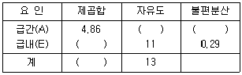
- 37.93
- 3.19
- 2.43
- 0.026
(정답률: 60%)
8. 아래 표는 LS(27)형 직교배열을 나타내고 있다. 열 번호 3에 A인자를, 5에 B인자를 배치하였다면, 교호작용 A×B는 어느 열에 나타나는가?
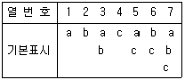
- 4
- 5
- 6
- 7
(정답률: 알수없음)
9. 어떤 합성섬유는 온도(x)가 증가함에 따라 수축율(y)이 직선적인 함수관계를 가지고 있다고 한다. 이를 확인하기 위하여 다음과 같은 데이터를 얻었다. 이를 이용하여 결정계수를 구하면?
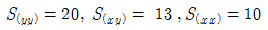
- 0.910
- 0.7144
- 0.845
- 0.155
(정답률: 알수없음)
10. 동일한 물건을 생산하는 4대의 기계에서 불량 여부의 동일성에 관한 실험을 하였다. 적합품 이면 0, 부적합품이면 1의 값을 주기로 하고, 4대의 기계에서 나오는 100개씩의 제품을 만들어 부적합품 여부를 실험하여 다음과 같은 분산분석표를 구하였다. 검정통계량 Fo의 값은?
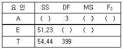
- 7.20
- 7.74
- 8.27
- 8.47
(정답률: 알수없음)
11. 수준이 k인 라틴방격법에서 μ(AiBj)의 유효 반 복수는?
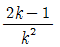
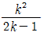
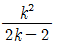
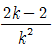
(정답률: 알수없음)
12. 자체의 효과나 다른 인자와의 효과(교호작용)도 처리할 수 없으나 실험값에는 영향을 준다고 보는 인자는?
- 제어인자
- 표시인자
- 블록인자
- 보조인자
(정답률: 알수없음)
13. 이원배치 실험에 관한 내용이다. 가장 올바른 것은?
- 반복있는 혼합모형에서 변량인자의 모평균 추정은 의미가없다.
- 반복있는 혼합모형에서는
 가 된다. (단, A가 모수이다.)
가 된다. (단, A가 모수이다.) - 반복있는 모수모형에서 Ai수준에서의 모평균 신뢰구간을 구할 때는 유효반복수를 먼저 구해야 한다.
- 반복없는 모수모형에서 인자의 구간추정은 분산분석표의 F검정으로부터 유의하지 않아도 행하여야 한다.
(정답률: 알수없음)
14. 어떤 콘크리이트 공장에서 압축강도를 향상시키기 위하여 배합비를 4일간 랜덤하게 실험한 측정치를 수치 변환한 데이터값이다. 수치변환된 ⓨ(결측치)값을 추정하면?
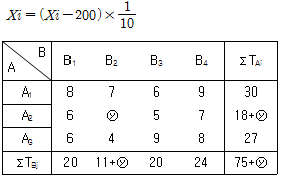
- 38
- 35
- 4
- 6
(정답률: 알수없음)
15. 임의의 선형식 L=ℓ1A1+ℓ2A2+...+ℓaAa에서 계수 ℓ1+ℓ2+...+ℓa=0인 조건이 있을 때에 L을 무엇이라 하는가?
- 별명
- 교호작용
- 직교
- 대비
(정답률: 알수없음)
16. 인자A는 4수준, 3회 반복인 1원 배치에서 분산분석한 결과 급간 변동이 2.96, 전변동이 4.29일때 인자 A의 순변동 S'A은?
- 2.461
- 2.233
- 1.963
- 1.340
(정답률: 알수없음)
17. A, B 이원배치의 실험에서 교호작용을 분리하려고 반복 2회 실험을 하였다. A의 자유도가 4이고, 교호작용의 자유도가 20이면 B의 수준수는?
- 3
- 4
- 5
- 6
(정답률: 알수없음)
18. 인자 A가 a수준, 반복 n의 1원배치 실험을 하였을 때 분산분석표 작성에 필요한 수리 식으로 가장 올바른 것은?
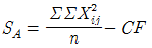
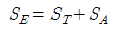
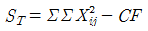
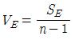
(정답률: 알수없음)
19. 변량 모형의 인자 A를, 4수준 택하고 각 수준마다 반복5회의 실험전체를 랜덤한 순서로 행하고 분산분석표를 작성하고자 E(VA)란을 구했다. 그 값은?
- σE2+20σA2
- σE2+4σA2
- σE2+5σA2
- σE2+3σA2
(정답률: 알수없음)
20. 실험계획법에서 사용되는 모형을 인자의 종류에 따라 분류할 때 이에 해당되지 않는 것은?
- 모수모형
- 변량모형
- 구조모형
- 혼합모형
(정답률: 알수없음)
2과목: 통계적품질관리
21. 계량형 관리도에 대한 설명으로 가장 올바른 것은?
- u 관리도는 계량형 관리도로 분류된다.
- 계수형 관리도에 비하여 많은 정보를 얻지 못한다.
- 온도, 압력, 인장 강도, 무게 등은 계량형 관리도로 관리한다.
- 일반적으로 시료의 크기가 계수형 관리도에서 요구하는 것보다 크다.
(정답률: 알수없음)
22. 군의 크기 5, 군의 수 25에 대하여 다음의 [자료]를 얻었다.
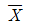
관리도의 UCL을 구하면 얼마인가?(단, n=5일때 d2=2.33, n=4일때 d2=2.06이다.)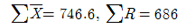
- 12.199
- 14.064
- 45.664
- 47.529
(정답률: 알수없음)
23. 계수값 검사를 위한 축차샘플링 검사 (KS A ISO 8422)에서 nCUM＜nt일때, 합격판정선 A를 구하는 식으로 옳은 것은?
- gnCUM+hR
- gnCUM-hA
- gnCUM-hR
- gnCUM-hA
(정답률: 알수없음)
24. 어느 공정으로부터 신뢰구간의 하한을 신뢰도 95(%)로 추정하였더니 50.3을 얻었다. 이때 시료의 크기 n=16,
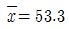
이라면 표준편차(σ)는 얼마인가? (단, u(0.975)=1.96)- 6.12
- 8.24
- 10.46
- 14.36
(정답률: 알수없음)
25.
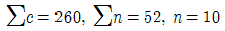
으로부터 계산한 U 관리도의 관리상한은?- 7.12
- 7.62
- 8.12
- 8.62
(정답률: 알수없음)
26. 이항분포에 대한 설명 내용으로 가장 관계가 먼 것은?
- 이항분포를 이룩하는 확률과정을 베르누이과정, 베르누이 시행이라 한다.
- 각 시행은 서로 독립이다.
- 각 시행에서는 두가지 이상의 사상이 일어나는데, 이 사상들은 서로 독립이다.
- 성공할 확률을 P라 하면 이 확률은 어느 시행에 있어서도 변하지 않는다.
(정답률: 알수없음)
27. 금속판의 표면경도의 상한 규격치가 68이하로 규정되어 있을 때 경도 68을 넘는 것이 0.5%이하인 로트는 통과시키고 4%이상인 로트는 통과시키지 않도록 할 때,
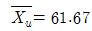
이라 하면 로트의 표준편차 σ는 얼마인가?(단, k=2.11, α=0.⑤, β=0.1로한다.)- 1
- 2
- 3
- 4
(정답률: 알수없음)
28. KS A ISO 2859의 샘플링 검사표 구성상의 특징으로 가장 관계가 먼 내용은?
- 검사의 엄격도 조정에 의하여 품질향상의 자극을 준다.
- 구입자가 공급자를 선택할 수 있다.
- 단기적으로 품질을 보증한다.
- 3종류의 샘플링 형식이 정해져 있다.
(정답률: 알수없음)
29. A, B 두 식품회사에서 제조되는 냉면 육수에 포함된 대장균의 수를 조사하였더니 A회사에서는 육수 1cc 당 30마리, B회사에서는 육수 1cc 당 70마리가 검출되었다. B회사에서 제조되는 냉면 육수에 대장균이 더 함유되었는지에 대한 검정 결과로 옳은 것은? (단, α=0.0⑤, U0.995=2.576, U0.99=2.326 U0.95=1.645, U0.975=1.96)
- A,B 회사 함유량은 같다.
- A 회사쪽이 더 함유되어 있다.
- B 회사쪽이 더 함유되어 있다.
- 알 수 없다.
(정답률: 알수없음)
30. 공정이 이상상태일 경우에는 관리도에서 가능한 한 빨리 이상신호를 줄 수 있어야 한다. 이상신호를 보다 빨리 줄 수 있는 방법으로 가장 거리가 먼 것은?
- 표본추출 간격을 짧게 한다.
- 관리한계선을 더 넓게 한다.
- 각 군의 시료의 크기를 크게 한다.
- X 관리도 보다
 관리도를 사용한다.
관리도를 사용한다.
(정답률: 알수없음)
31. 상관관계 분석에 고나한 설명 중 가장 관계가 먼 내용은?
- 두 변수사이에 상관 분석을 할 때는 먼저 산포도(산점도)로 상관 여부를 파악한다.
- 상관계수를 구할 때는 2변수에 대한 데이터가 같은 갯수이어야 한다.
- 상관계수가 0보다 작으면 상관이 없다는 의미이다.
- 모집단의 상관 여부를 검정할 때 검정통계량은 t분포를 따른다.
(정답률: 알수없음)
32. 다음은 확률의 정리들이다. 잘못된 것은?
- P(A∪B)=P(A)+P(B)-P(A∩B)
- P(A|B)=P(A∩B)/P(A)
- P(A∩B)=P(A)·P(B)단, 사상 A,B는 서로 독립
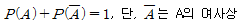
(정답률: 알수없음)
33. 다음의 수식 중에 옳지 않은 것은?
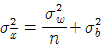
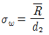
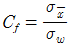
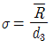
(정답률: 알수없음)
34. OC곡선에서 n과 cfm f일정하게 하고 N을 200, 500, 1000으로 변하게 하면 OC곡선의 모양은 어떻게 변하는가?(단, N/n이 10배이상 이다)
- 거의 변하지 않는다.
- 로트의 크기가 달라지면 품질보증의 정도가 달라진다.
- 곡선의 기울기가 급해진다.
- 오른쪽으로 완만하게 되어간다.
(정답률: 알수없음)
35. 통계적 추정에 있어 추정량의 분산이 작을 수록 바람직한 성질은?
- 불편성
- 유효성
- 일치성
- 충분성
(정답률: 알수없음)
36. 품질에 주기적인 변동이 있는 경우 공정의 품질이 변화하는 주기와 상이한 간격으로 표본을 추출하기 위해 고안된 샘플링 방법은?
- 단순랜덤 샘플링
- 계통 샘플링
- 2단계 샘플링
- 지그재그샘플링
(정답률: 알수없음)
37. 관리도에 대한 설명 내용으로 가장 관계가 먼 것은?
- 관리도에는 한 개의 중심선과, 두 개의 관리 한계선을 긋는다.
- 고나리도의 사용 목적에 따라, 해석용 관리도와 관리용 관리도가 있다.
- 우연원인에 의한 공정의 변동이 있으면 관리 한계선 밖으로, 특성치가 나타난다.
- 관리도는 제조공정이 잘 관리된 상태에 있는가를 조사하기 위해서 사용된다.
(정답률: 알수없음)
38. N(100, 52)의 모집단에서 n개의 시료를 뽑을 때 시료평균의 분포가 N(100, 12)이 되었다면 시료의 크기 n 은?
- 1
- 5
- 16
- 25
(정답률: 알수없음)
39. H0 : σ2 = 4.5를 검정하기 위해 n=10의 시료를 무작위로 추출하여 불편분산을 계산 하였더니 그 값이 8.7이었다. 이 경우의 검정 통계량 x20 은?
- 1.93
- 2.58
- 17.4
- 36.9
(정답률: 알수없음)
40. 다음 데이터 중에서 중위수(또는 중앙치)값은?
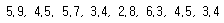
- 2.8
- 3.1
- 3.8
- 4.5
(정답률: 알수없음)
3과목: 생산시스템
41. 수주로부터 제품출하까지의 각 단계별 착수 및 완료시기를 결정하여 생산일정을 계획하는 것을 무엇이라 하는가?
- 생산계획
- 공정계획
- 일정계획
- 공수계획
(정답률: 알수없음)
42. 예방보전 활동을 하기 위해서는 중점설비 분석을 하여야 한다. 중점설비분석 사항과 가장 거리가 먼 것은?
- 정지손실의 영향이 큰 중점설비의 파악
- 과거의 고장통계 분석
- 설비열화가 품질저하에 미치는 영향이 큰 설비
- 자동화된 설비
(정답률: 알수없음)
43. 개별생산 시스템의 특징으로 가장 거리가 먼 것은?
- 운반되는 물품의 크기, 중량 등이 다양하다.
- 공장내의 통로는 양산체제에 비하여 넓다.
- 운반설비는 자유경로형 설비를 이용하는 경우가 많다.
- 제품생산에는 전용설비를 이용하는 것이 유리하다.
(정답률: 알수없음)
44. 다음의 자료에서 '나'의 활동시간의 기대시간은 얼마인가?
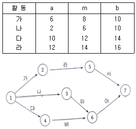
- 8
- 6
- 12
- 14
(정답률: 알수없음)
45. 설비의 효율화를 저해하는 6대 로스(가공 및 조립)에서 이론 사이클 타임과 실제의 사이클 타임과의 차로 발생하는 로스는?
- 속도저하 로스
- 프로세스 고장 로스
- 생산조정 로스
- SD 로스
(정답률: 알수없음)
46. 자재의 수요가 발생하여 발주를 하고 최종 공급이 완료될 때 까지 소요되는 기간은?
- 재발주기간
- 오퍼레이팅 타임
- 공급기간
- 리드타임
(정답률: 알수없음)
47. 표준시간을 설정하는 과정에서 레이팅(정상화) 작업을 필요로 하는 것은?
- WF법에 의한 표준시간
- MTM법에 의한 표준시간
- 스톱워치에 의한 표준시간
- 표준자료법에 의한 표준시간
(정답률: 알수없음)
48. Y 요소작업의 평균관측 시간치가 20분, 제1평가에 의한 속도평가계수가 80%, 2차 난이도 조정계수가 30%인 경우 정미시간은 몇(분)인가?
- 4.8
- 10.8
- 20.8
- 46.8
(정답률: 알수없음)
49. JIT 시스템의 특징에 대한 설명 중 가장 거리가 먼 내용은?
- 고객수요에서부터 시작되는 역방향의 풀(pull) 시스템이다.
- 낭비 제거 보다는 계획 및 통제중심이다.
- 관리도구는 칸반에 의한 시각관리가 중심이 된다.
- 리드타임 최소화에 중점을 둔다.
(정답률: 알수없음)
50. 다음 예측 방법 중 신제품을 출시할 때 가장 적합한 방법은?
- 지수평활법(Exponential Smoothing)
- 시장조사(Market Survey)
- 회귀분석(Regressino Analysis)
- 계절분석(Seasonal Analysis)
(정답률: 알수없음)
51. 다음은 분산구매의 유리한 점을 나타낸 것이다. 가장 거리가 먼 것은?
- 자주적 구매 가능
- 가격이나 거래조건 유리
- 긴급수요의 경우 유리
- 구매수속이 간단하여 신속한 처리
(정답률: 알수없음)
52. 공정분석에 있어서 기능의 달성상 필요한 대체안의 작성을 위한 아이디어(idea)도출방법에 해당 되지 않는 것은?
- 육하원칙(5W1H)
- 체크리스트법
- 브레인스토밍(Brain storming)
- 순환법(Cycle timing)
(정답률: 알수없음)
53. 설비배치 및 개선의 목적을 설명한 내용으로 가장 관계가 먼 것은?
- 작업자 부하 평준화
- 재공품의 증가
- 관리, 감독의 용이
- 이동거리의 감소
(정답률: 알수없음)
54. 하나의 단위작업을 실현하기 위하여 대상을 조작하는 한 단위(4DM 정도)를 무엇이라 하는가?
- 동작요소
- 요소작업
- 단위작업
- 공정
(정답률: 알수없음)
55. 포디즘에서 동시관리 합리화를 위한 전제조건으로 가장 관계가 먼 것은?
- 생산의 표준화(3S)
- 이동조립법(컨베이어시스템)
- 직능적조직
- 대량 소비시장의 존재
(정답률: 알수없음)
56. Line Balancing 에서의 애로공정이란?
- 조립작업에 있어서 부하량이 가장 적은 공정
- 가장 많은 시간이 소요되는 공정
- 조립작업의 기술적 어려움이 없는 공정
- 가장 작은 시간이 소요되는 공정
(정답률: 알수없음)
57. 자주보전활동 7 스텝 중 각종 현장관리의 표준화를 실시하고 작업의 효율화와 품질 및 안전의 확보를 꾀한다면 이의 내용은 몇 스텝인가?
- 4 스텝 : 총점검
- 5 스텝 : 자주점검
- 6 스텝 : 정리정돈
- 7 스텝 : 자주관리의 철저(개별대책)
(정답률: 알수없음)
58. 동작분석시 연구대상이 된 신체부분에 광원을 부착하여 일정한 시간 산격으로 비대칭적인 밝기로 점멸시키면서 사진촬영을 하여 동작에 소요된 시간, 속도, 가속도를 알수 있는 것은?
- 크로노사이클 그래프
- 사이클 그래프
- 스트로보 사진분석
- 아이 카메라(eye camera)
(정답률: 알수없음)
59. 오늘은 생산통제 일정표상에서 10일 째이며 4개의 제품 생산일정이 다음 [표]와 같이 나타나 있다. 긴급률법(critical ratio technique)에 의하여 각 제품의 작업순서를 결정하면?
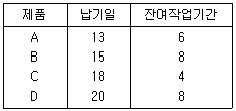
- A-B-D-C
- B-C-D-A
- C-A-B-D
- A-D-B-C
(정답률: 알수없음)
60. MRP의 특징에 대한 설명 내용으로 가장 거리가 먼 것은?
- 소요되는 자재를 최소의 비용으로 적시에 공급할 수 있다.
- 과거 전통적 재고 시스템보다 합리적이다.
- 수요가 일정하며 연속적이라는 가정에서 출발한다.
- 원료나 부품의 수요를 최종제품의 납기와 소요량이 나타나 있는 일정계획에 의해 계산한다.
(정답률: 알수없음)
4과목: 품질경영
61. 품질관리 부문의 피드백사이클 중 공정관리 기술부문에서 이루어지며 부품이나 제품의 기술적 사항에 대한 적합성 여부를 판단하는 것은?
- 품질개선
- 품질해석
- 품질평가
- 품질조치
(정답률: 알수없음)
62. 품질보증의 뜻을 가장 올바르게 표현한 것은?
- 소비자와의 약속이며 계약이다.
- 일정한 기간 동안 무상수리를 보증하는 것이다.
- 클레임 발생시 양품과 교환을 즉시 보증하는 것이다.
- 철저한 검사와 수리를 주축으로 하는 것이다.
(정답률: 알수없음)
63. 복잡한 요인이 얽힌 문제(사상)에 대하여 그 인과관계를 명확히 함으로써 적절한 해결책을 찾는 방법으로, 각 요인의 인과관계를 논리적으로 연결하여 적절한 문제해결을 이끌어 내는데 유효한 수법을 무엇이라 하는가?
- PDPC법
- 매트릭스도법
- 연관도법
- 계통도법
(정답률: 알수없음)
64. 사내표준의 종류에는 크게 목적에 따른 분류와 강제력 정도에 따른 분류가 있다. 이때 표준화 대상의 목적에 따른 분류가 아닌 것은?
- 설계표준
- 관리표준
- 기술표준
- 잠정표준
(정답률: 알수없음)
65. 산업표준화의 내용으로 가장 관계가 먼 것은?
- 광공업품의 종류, 형상, 치수
- 광공업품의 설계방법, 제도방법
- 광공업품의 생산업무, 사무규정
- 광공업품의 시험분석, 측정방법
(정답률: 알수없음)
66. 계측관리체제 정비의 목적과 가장 관계가 먼 것은?
- 제품의 품질향상
- 검사작업의 합리화
- 관리업무의 효율화
- 사용소비의 합리화
(정답률: 알수없음)
67. 품질관리조직을 편성하는데 있어서 조직편성상의 원칙으로 가장 관계가 먼 것은?
- 전원참가의 원칙
- 전문가의 원칙
- 품질관리 부문을 라인에 두는 원칙
- 종합조정의 원칙
(정답률: 알수없음)
68. 고객에 대한 설명 내용으로 가장 거리가 먼 것은?
- 고객은 내부고객과 외부고객이 있다. 흔히 내부고객은 회사 내 직원을 의미하고, 외부고객은 최종 사용자를 의미한다.
- 새로운 건물을 짓는 건축회사는 자신의 고객으로 새로운 건물에 입주할 입주대상자와 자재를 공급하는 공급자들만 외부고객으로 정의하였다.
- 제품의 품질을 만드는 것은 내부고객이다. 내부고객을 정확히 알고 내부고객 요구를 만족시켜주는 것이 좋은품질을 만드는 지름길이다.
- 외부고객은 제품의 최종사용자이다. 기업에선 제품의 사용자를 정확하게 파악하여 이들의 의견을 정확하게 청취하여 대책을 세우는 것이 경쟁력을 갖추는 지름길이다.
(정답률: 알수없음)
69. ISO 9001:2000에서 조사관련용어로서 수립된 목표를 달성하기 위하여 해당 주제의 적절성, 충족성 및 효과성을 결정하기 위하여 시행되는 활동은?
- 검토(review)
- 시험(test)
- 검증(verification)
- 타당성 확인(validation)
(정답률: 알수없음)
70. 품질코스트에 관한 설명 중 가장 거리가 먼 내용은? (단, P=예방코스트, A=평가코스트, F=실패코스트)
- A코스트가 증가하면 품질코스트는 감소
- P코스트가 증가하면 F코스트는 감소
- A코스트가 증가하면 F코스트는 감소
- 고품질일수록 P와A코스트가 증가
(정답률: 알수없음)
71. 파레토도를 사용하여 고객 클레임의 주요 항목이 무엇인가를 찾아내었다. 고객 만족을 위해 전체적인 크레임 수를 줄이려고 한다. 다음 중 어떤 기법을 사용하는 것이 그 원인을 찾는데 가장 효율적인가?
- 히스토그램
- 체크시트
- 특성요인도
- 산점도
(정답률: 알수없음)
72. 어떤 공정에서 50개의 측정치에 의하여 제품품질의 표준편차 8.25를 얻었다. 규격상한 70, 규격하한 30, 공정 능력지수가 0.404일 때, 이 공정의 공정 능력비(Dp)는?
- 1.377
- 2.475
- 4.121
- 5.289
(정답률: 알수없음)
73. 제품의 사용시 사고가 발생했을 때의 대책으로 피해자의 구제조치가 우선하는 것은?
- 제조물 책임예방(PLP)
- 제품안전기술(PST)
- 제조물 책임방어(PLD)
- 제품안전(PS)
(정답률: 알수없음)
74. 부품규격이 A: 15±0.7, B: 28.1±0.5, C: 12±0.5일 때 조립품 A+B-C의 규격은?
- 31.1±1.70
- 31.1±0.50
- 31.1±0.99
- 31.1±0.12
(정답률: 알수없음)
75. 히스토그램을 작성하여 SU와SL의 규격을 기입 할 경우 SU 밖으로 나타난 부적합품률은 0.0013이고 SL 밖으로 나타난 부적합품률 0.0018였다면 부적합품률은 총 몇 PPM인가?
- 31 PPM
- 310PPM
- 3100 PPM
- 31000 PPM
(정답률: 알수없음)
76. 한기업이 중요한 고객요구를 어느 정도 충족하고 있는가, 즉 그의 성과를 그 기업이 속해있는 산업에서 가장 우수한 기업의 성과와 지속적으로 비교 분석함으로써 개선의 여지를 결정하는 과정은?
- Benchmarking(벤치마킹)
- Reengineering(리엔지니어링)
- Business Process Reengineering(BPR)
- Downsizing(다운사이징)
(정답률: 알수없음)
77. 기능에 따른 표준화의 분류에서 기본규격은 어디에 속하는가?
- 제품규격
- 방법규격
- 단체규격
- 전달규격
(정답률: 알수없음)
78. 규격서의 구성에 관한 설명 중 맞지 않는 것은?
- 규격서는 필요하면 참고나 해설을 붙일 수 있다.
- 해설은 해설이라 명시하고 본체의 다음에 오게 한다.
- 부속서가 있는 경우는 부속서라 명시하고 본체의 바로 앞에 오게 한다.
- 참고는 참고라 명시하고 본체의 다음에 오게하나, 본체 중에 기재하는 편이 이해하기 쉬울 때에는 그렇게 하여도 좋다.
(정답률: 알수없음)
79. 분임조 활동의 기본목적으로 가장 관계가 먼 것은?
- 신뢰도 향상과 원가절감을 목적으로 전개시킨 품질향상에 대한 종업원의 동기부여 프로그램 이다.
- 기업의 체질개선과 발전에 기여한다.
- 인간성을 존중하고 보람있는 명랑한 직장을 만든다.
- 인간의 능력을 발휘하여 무한한 가능성을 창출한다.
(정답률: 알수없음)
80. 쥬란(J.M.Juran)의 품질에 대한 정의에 해당하는 것은?
- 소비자 기대에의 부응
- 사용 적합성
- 시방에의 일치
- 욕구의 충족
(정답률: 알수없음)
k×k 라틴방격법에서 총 자유도 vT=k3-1이다. 이는 각 인자에 대한 자유도가 k-1이고, 총 자유도는 각 인자의 자유도를 곱한 후 1을 뺀 값이기 때문이다. 따라서, k×k 라틴방격법에서 총 자유도 vT=k3-1이다.